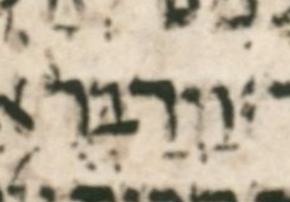

| bcv (link to tanach.us) | 1k12:7 |
| MPK | וַיְדַבְּרֻ֨ |
| qere | וַיְדַבְּר֨וּ |
| at issue | וּ |
| at issue English | changed a qubuts to a shuruq |
| folio col line | 194A 1 3 |
The qubuts in the MPK becomes a shuruq dot in the qere.
In WLC, this word has not only an a-note but also a c-note, presumably because WLC has qadma where BHS (in error) has pashta.
As a reminder, a WLC c-note (bracket-c note) is defined as follows: «We read an accent in ל differently from BHS. (This is similar to the note “]C”, but the latter refers to accent differences against BHQ.)»